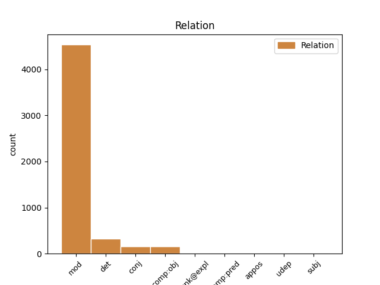
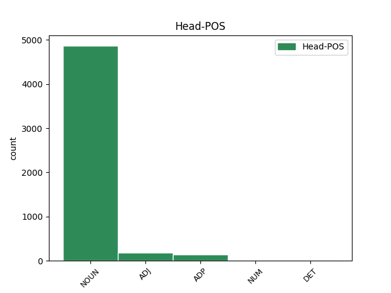
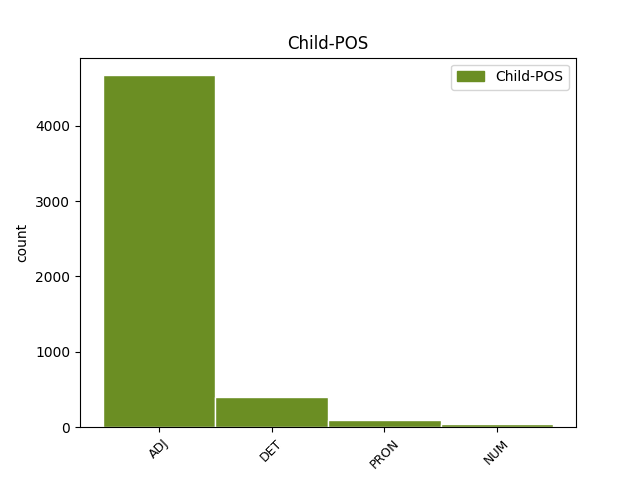

Distribution of features within this leaf



Agreement Rules sorted by frequency.
- When the dependent token is the modifer(mod) of the head token, and the dependent token is ADJ.
1 Zrušují _ _ _ _ 0 _ _ _
2 se _ _ _ _ 0 _ _ _
3 1 _ _ _ _ 0 _ _ _
4 . _ _ _ _ 0 _ _ _
5 nařízení _ _ _ _ 0 _ _ _
6 vlády _ _ _ _ 0 _ _ _
7 ČSSR _ _ _ _ 0 _ _ _
8 č._136/1989_Sb. _ _ _ _ 0 _ _ _
9 , _ _ _ _ 0 _ _ _
10 o _ _ _ _ 0 _ _ _
11 informační _ _ _ _ 0 _ _ _
12 soustavě _ _ _ _ 0 _ _ _
13 organizací _ _ _ _ 0 _ _ _
14 , _ _ _ _ 0 _ _ _
15 2 _ _ _ _ 0 _ _ _
16 . _ _ _ _ 0 _ _ _
17 vyhláška _ _ _ _ 0 _ _ _
18 federálního _ _ _ _ 0 _ _ _
19 ministerstva _ _ _ _ 0 _ _ _
20 financí _ _ _ _ 0 _ _ _
21 č._155/1971_Sb. _ _ _ _ 0 _ _ _
22 , _ _ _ _ 0 _ _ _
23 o _ _ _ _ 0 _ _ _
24 inventarizacích _ _ _ _ 0 _ _ _
25 hospodářských _ _ _ _ 0 _ _ _
26 prostředků _ _ _ _ 0 _ _ _
27 , _ _ _ _ 0 _ _ _
28 3 _ _ _ _ 0 _ _ _
29 . _ _ _ _ 0 _ _ _
30 vyhláška _ _ _ _ 0 _ _ _
31 federálního _ _ _ _ 0 _ _ _
32 ministerstva _ _ _ _ 0 _ _ _
33 financí _ _ _ _ 0 _ _ _
34 č._21/1990_Sb. _ _ _ _ 0 _ _ _
35 , _ _ _ _ 0 _ _ _
36 o _ _ _ _ 0 _ _ _
37 kalkulaci _ _ _ _ 0 _ _ _
38 , _ _ _ _ 0 _ _ _
39 4 _ _ _ _ 0 _ _ _
40 . _ _ _ _ 0 _ _ _
41 vyhláška _ _ _ _ 0 _ _ _
42 federálního federální ADJ AANS2----1A---- Case=Gen|Degree=Pos|Gender=Neut|Number=Sing|Polarity=Pos 43 mod _ _
43 ministerstva ministerstvo NOUN NNNS2-----A---- Case=Gen|Gender=Neut|Number=Sing|Polarity=Pos 0 _ _ _
44 financí _ _ _ _ 0 _ _ _
45 č._23/1990_Sb. _ _ _ _ 0 _ _ _
46 , _ _ _ _ 0 _ _ _
47 o _ _ _ _ 0 _ _ _
48 účetnictví _ _ _ _ 0 _ _ _
49 . _ _ _ _ 0 _ _ _
1 Tento tento DET PDYS1---------- Case=Nom|Gender=Masc|Number=Sing|PronType=Dem 2 det _ _
2 zákon zákon NOUN NNIS1-----A---- Animacy=Inan|Case=Nom|Gender=Masc|Number=Sing|Polarity=Pos 0 _ _ _
3 nabývá _ _ _ _ 0 _ _ _
4 účinnosti _ _ _ _ 0 _ _ _
5 dnem _ _ _ _ 0 _ _ _
6 1 _ _ _ _ 0 _ _ _
7 . _ _ _ _ 0 _ _ _
8 ledna _ _ _ _ 0 _ _ _
9 1992 _ _ _ _ 0 _ _ _
10 . _ _ _ _ 0 _ _ _
1 (7) _ _ _ _ 0 _ _ _
2 Pro _ _ _ _ 0 _ _ _
3 účely _ _ _ _ 0 _ _ _
4 tohoto _ _ _ _ 0 _ _ _
5 zákona _ _ _ _ 0 _ _ _
6 se _ _ _ _ 0 _ _ _
7 majetek _ _ _ _ 0 _ _ _
8 a _ _ _ _ 0 _ _ _
9 závazky _ _ _ _ 0 _ _ _
10 člení _ _ _ _ 0 _ _ _
11 na _ _ _ _ 0 _ _ _
12 dlouhodobé dlouhodobý ADJ AAIP4----1A---- Animacy=Inan|Case=Acc|Degree=Pos|Gender=Masc|Number=Plur|Polarity=Pos 0 _ _ _
13 a _ _ _ _ 0 _ _ _
14 krátkodobé krátkodobý ADJ AAIP4----1A---- Animacy=Inan|Case=Acc|Degree=Pos|Gender=Masc|Number=Plur|Polarity=Pos 12 conj _ SpaceAfter=No
15 . _ _ _ _ 0 _ _ _
1 (9) _ _ _ _ 0 _ _ _
2 Využije-li _ _ _ _ 0 _ _ _
3 účetní _ _ _ _ 0 _ _ _
4 jednotka _ _ _ _ 0 _ _ _
5 možnosti _ _ _ _ 0 _ _ _
6 podle _ _ _ _ 0 _ _ _
7 odstavců _ _ _ _ 0 _ _ _
8 7 _ _ _ _ 0 _ _ _
9 nebo _ _ _ _ 0 _ _ _
10 8 _ _ _ _ 0 _ _ _
11 a _ _ _ _ 0 _ _ _
12 dojde _ _ _ _ 0 _ _ _
13 ke _ _ _ _ 0 _ _ _
14 změně _ _ _ _ 0 _ _ _
15 původního _ _ _ _ 0 _ _ _
16 předpokladu _ _ _ _ 0 _ _ _
17 , _ _ _ _ 0 _ _ _
18 a _ _ _ _ 0 _ _ _
19 to _ _ _ _ 0 _ _ _
20 i _ _ _ _ 0 _ _ _
21 v _ _ _ _ 0 _ _ _
22 průběhu _ _ _ _ 0 _ _ _
23 účetního _ _ _ _ 0 _ _ _
24 období _ _ _ _ 0 _ _ _
25 , _ _ _ _ 0 _ _ _
26 nepoužije _ _ _ _ 0 _ _ _
27 účetní _ _ _ _ 0 _ _ _
28 jednotka _ _ _ _ 0 _ _ _
29 pro _ _ _ _ 0 _ _ _
30 účtování _ _ _ _ 0 _ _ _
31 a _ _ _ _ 0 _ _ _
32 sestavení _ _ _ _ 0 _ _ _
33 účetní _ _ _ _ 0 _ _ _
34 závěrky _ _ _ _ 0 _ _ _
35 mezinárodní _ _ _ _ 0 _ _ _
36 účetní _ _ _ _ 0 _ _ _
37 standardy _ _ _ _ 0 _ _ _
38 od _ _ _ _ 0 _ _ _
39 počátku _ _ _ _ 0 _ _ _
40 účetního _ _ _ _ 0 _ _ _
41 období _ _ _ _ 0 _ _ _
42 , _ _ _ _ 0 _ _ _
43 ve v ADP RV--6---------- AdpType=Voc|Case=Loc 0 _ _ _
44 kterém který DET P4ZS6---------- Case=Loc|Gender=Masc,Neut|Number=Sing|PronType=Int,Rel 43 comp:obj _ _
45 došlo _ _ _ _ 0 _ _ _
46 ke _ _ _ _ 0 _ _ _
47 změně _ _ _ _ 0 _ _ _
48 původního _ _ _ _ 0 _ _ _
49 předpokladu _ _ _ _ 0 _ _ _
50 , _ _ _ _ 0 _ _ _
51 případně _ _ _ _ 0 _ _ _
52 od _ _ _ _ 0 _ _ _
53 počátku _ _ _ _ 0 _ _ _
54 účetního _ _ _ _ 0 _ _ _
55 období _ _ _ _ 0 _ _ _
56 , _ _ _ _ 0 _ _ _
57 které _ _ _ _ 0 _ _ _
58 bylo _ _ _ _ 0 _ _ _
59 stanoveno _ _ _ _ 0 _ _ _
60 rozhodnutím _ _ _ _ 0 _ _ _
61 nejvyššího _ _ _ _ 0 _ _ _
62 orgánu _ _ _ _ 0 _ _ _
63 účetní _ _ _ _ 0 _ _ _
64 jednotky _ _ _ _ 0 _ _ _
65 , _ _ _ _ 0 _ _ _
66 nebo _ _ _ _ 0 _ _ _
67 od _ _ _ _ 0 _ _ _
68 následujícího _ _ _ _ 0 _ _ _
69 účetního _ _ _ _ 0 _ _ _
70 období _ _ _ _ 0 _ _ _
71 . _ _ _ _ 0 _ _ _
1 Občanská _ _ _ _ 0 _ _ _
2 sdružení _ _ _ _ 0 _ _ _
3 , _ _ _ _ 0 _ _ _
4 jejich _ _ _ _ 0 _ _ _
5 organizační _ _ _ _ 0 _ _ _
6 jednotky _ _ _ _ 0 _ _ _
7 , _ _ _ _ 0 _ _ _
8 které _ _ _ _ 0 _ _ _
9 mají _ _ _ _ 0 _ _ _
10 právní _ _ _ _ 0 _ _ _
11 subjektivitu _ _ _ _ 0 _ _ _
12 , _ _ _ _ 0 _ _ _
13 církve _ _ _ _ 0 _ _ _
14 a _ _ _ _ 0 _ _ _
15 náboženské _ _ _ _ 0 _ _ _
16 společnosti _ _ _ _ 0 _ _ _
17 nebo _ _ _ _ 0 _ _ _
18 církevní _ _ _ _ 0 _ _ _
19 instituce _ _ _ _ 0 _ _ _
20 , _ _ _ _ 0 _ _ _
21 které _ _ _ _ 0 _ _ _
22 jsou _ _ _ _ 0 _ _ _
23 církevní _ _ _ _ 0 _ _ _
24 právnickou _ _ _ _ 0 _ _ _
25 osobou _ _ _ _ 0 _ _ _
26 , _ _ _ _ 0 _ _ _
27 a _ _ _ _ 0 _ _ _
28 honební _ _ _ _ 0 _ _ _
29 společenstva _ _ _ _ 0 _ _ _
30 mohou _ _ _ _ 0 _ _ _
31 vést _ _ _ _ 0 _ _ _
32 účetnictví _ _ _ _ 0 _ _ _
33 podle _ _ _ _ 0 _ _ _
34 zákona_č._563/1991_Sb. _ _ _ _ 0 _ _ _
35 , _ _ _ _ 0 _ _ _
36 o _ _ _ _ 0 _ _ _
37 účetnictví _ _ _ _ 0 _ _ _
38 , _ _ _ _ 0 _ _ _
39 ve _ _ _ _ 0 _ _ _
40 znění _ _ _ _ 0 _ _ _
41 zákona_č._117/1994_Sb.,_zákona_č._227/1997_Sb.,_zákona_č._492/2000_Sb.,_zákona_č._353/2001_Sb._a_zákona_č._437/2003_Sb. _ _ _ _ 0 _ _ _
42 , _ _ _ _ 0 _ _ _
43 pokud _ _ _ _ 0 _ _ _
44 jejich _ _ _ _ 0 _ _ _
45 celkové _ _ _ _ 0 _ _ _
46 příjmy _ _ _ _ 0 _ _ _
47 za _ _ _ _ 0 _ _ _
48 poslední _ _ _ _ 0 _ _ _
49 uzavřené _ _ _ _ 0 _ _ _
50 účetní _ _ _ _ 0 _ _ _
51 období _ _ _ _ 0 _ _ _
52 nepřesáhnou _ _ _ _ 0 _ _ _
53 3000000 _ _ _ _ 0 _ _ _
54 Kč _ _ _ _ 0 _ _ _
55 ; _ _ _ _ 0 _ _ _
56 přitom _ _ _ _ 0 _ _ _
57 se _ _ _ _ 0 _ _ _
58 na na ADP RR--4---------- AdpType=Prep|Case=Acc 0 _ _ _
59 ně on PRON P5XP4--3------- Case=Acc|Number=Plur|Person=3|PrepCase=Pre|PronType=Prs 58 comp:obj _ LId=on-1
60 vztahují _ _ _ _ 0 _ _ _
61 ustanovení _ _ _ _ 0 _ _ _
62 zákona_č._563/1991_Sb. _ _ _ _ 0 _ _ _
63 , _ _ _ _ 0 _ _ _
64 o _ _ _ _ 0 _ _ _
65 účetnictví _ _ _ _ 0 _ _ _
66 , _ _ _ _ 0 _ _ _
67 a _ _ _ _ 0 _ _ _
68 jeho _ _ _ _ 0 _ _ _
69 prováděcích _ _ _ _ 0 _ _ _
70 právních _ _ _ _ 0 _ _ _
71 předpisů _ _ _ _ 0 _ _ _
72 , _ _ _ _ 0 _ _ _
73 která _ _ _ _ 0 _ _ _
74 upravují _ _ _ _ 0 _ _ _
75 účtování _ _ _ _ 0 _ _ _
76 v _ _ _ _ 0 _ _ _
77 soustavě _ _ _ _ 0 _ _ _
78 jednoduchého _ _ _ _ 0 _ _ _
79 účetnictví _ _ _ _ 0 _ _ _
80 , _ _ _ _ 0 _ _ _
81 ve _ _ _ _ 0 _ _ _
82 znění _ _ _ _ 0 _ _ _
83 účinném _ _ _ _ 0 _ _ _
84 k _ _ _ _ 0 _ _ _
85 31 _ _ _ _ 0 _ _ _
86 . _ _ _ _ 0 _ _ _
87 prosinci _ _ _ _ 0 _ _ _
88 2003 _ _ _ _ 0 _ _ _
89 . _ _ _ _ 0 _ _ _
1 (6) _ _ _ _ 0 _ _ _
2 Pokud _ _ _ _ 0 _ _ _
3 nejpozději _ _ _ _ 0 _ _ _
4 k _ _ _ _ 0 _ _ _
5 poslednímu _ _ _ _ 0 _ _ _
6 dni _ _ _ _ 0 _ _ _
7 účetního _ _ _ _ 0 _ _ _
8 období _ _ _ _ 0 _ _ _
9 , _ _ _ _ 0 _ _ _
10 ve _ _ _ _ 0 _ _ _
11 kterém _ _ _ _ 0 _ _ _
12 skončí _ _ _ _ 0 _ _ _
13 tříletá _ _ _ _ 0 _ _ _
14 lhůta _ _ _ _ 0 _ _ _
15 podle _ _ _ _ 0 _ _ _
16 odstavce _ _ _ _ 0 _ _ _
17 5 _ _ _ _ 0 _ _ _
18 , _ _ _ _ 0 _ _ _
19 účetní _ _ _ _ 0 _ _ _
20 jednotka _ _ _ _ 0 _ _ _
21 požádá _ _ _ _ 0 _ _ _
22 o _ _ _ _ 0 _ _ _
23 přijetí _ _ _ _ 0 _ _ _
24 cenného _ _ _ _ 0 _ _ _
25 papíru _ _ _ _ 0 _ _ _
26 k _ _ _ _ 0 _ _ _
27 obchodování _ _ _ _ 0 _ _ _
28 na _ _ _ _ 0 _ _ _
29 evropském _ _ _ _ 0 _ _ _
30 regulovaném _ _ _ _ 0 _ _ _
31 trhu _ _ _ _ 0 _ _ _
32 , _ _ _ _ 0 _ _ _
33 může _ _ _ _ 0 _ _ _
34 prodloužit _ _ _ _ 0 _ _ _
35 používání _ _ _ _ 0 _ _ _
36 mezinárodních _ _ _ _ 0 _ _ _
37 účetních _ _ _ _ 0 _ _ _
38 standardů _ _ _ _ 0 _ _ _
39 ještě _ _ _ _ 0 _ _ _
40 o _ _ _ _ 0 _ _ _
41 jedno jeden NUM ClNS4---------- Case=Acc|Gender=Neut|Number=Sing|NumForm=Word|NumType=Card|NumValue=1,2,3 43 mod _ _
42 účetní _ _ _ _ 0 _ _ _
43 období období NOUN NNNS4-----A---- Case=Acc|Gender=Neut|Number=Sing|Polarity=Pos 0 _ _ _
44 . _ _ _ _ 0 _ _ _
1 Dlouhodobým _ _ _ _ 0 _ _ _
2 se _ _ _ _ 0 _ _ _
3 rozumí _ _ _ _ 0 _ _ _
4 takový _ _ _ _ 0 _ _ _
5 majetek _ _ _ _ 0 _ _ _
6 a _ _ _ _ 0 _ _ _
7 závazky _ _ _ _ 0 _ _ _
8 , _ _ _ _ 0 _ _ _
9 kde _ _ _ _ 0 _ _ _
10 doba _ _ _ _ 0 _ _ _
11 použitelnosti _ _ _ _ 0 _ _ _
12 , _ _ _ _ 0 _ _ _
13 popřípadě _ _ _ _ 0 _ _ _
14 sjednaná _ _ _ _ 0 _ _ _
15 doba _ _ _ _ 0 _ _ _
16 splatnosti _ _ _ _ 0 _ _ _
17 při _ _ _ _ 0 _ _ _
18 vzniku _ _ _ _ 0 _ _ _
19 účetního _ _ _ _ 0 _ _ _
20 případu _ _ _ _ 0 _ _ _
21 je _ _ _ _ 0 _ _ _
22 delší _ _ _ _ 0 _ _ _
23 než _ _ _ _ 0 _ _ _
24 1 _ _ _ _ 0 _ _ _
25 rok _ _ _ _ 0 _ _ _
26 , _ _ _ _ 0 _ _ _
27 ostatní _ _ _ _ 0 _ _ _
28 majetek _ _ _ _ 0 _ _ _
29 a _ _ _ _ 0 _ _ _
30 závazky _ _ _ _ 0 _ _ _
31 jsou _ _ _ _ 0 _ _ _
32 považovány _ _ _ _ 0 _ _ _
33 za za ADP RR--4---------- AdpType=Prep|Case=Acc 0 _ _ _
34 krátkodobé krátkodobý ADJ AAIP4----1A---- Animacy=Inan|Case=Acc|Degree=Pos|Gender=Masc|Number=Plur|Polarity=Pos 33 comp:obj _ SpaceAfter=No
35 . _ _ _ _ 0 _ _ _
1 (3) _ _ _ _ 0 _ _ _
2 Účetnictví _ _ _ _ 0 _ _ _
3 účetní _ _ _ _ 0 _ _ _
4 jednotky _ _ _ _ 0 _ _ _
5 je _ _ _ _ 0 _ _ _
6 úplné _ _ _ _ 0 _ _ _
7 , _ _ _ _ 0 _ _ _
8 jestliže _ _ _ _ 0 _ _ _
9 účetní _ _ _ _ 0 _ _ _
10 jednotka _ _ _ _ 0 _ _ _
11 zaúčtovala _ _ _ _ 0 _ _ _
12 v _ _ _ _ 0 _ _ _
13 účetním _ _ _ _ 0 _ _ _
14 období _ _ _ _ 0 _ _ _
15 v _ _ _ _ 0 _ _ _
16 účetních _ _ _ _ 0 _ _ _
17 knihách _ _ _ _ 0 _ _ _
18 všechny _ _ _ _ 0 _ _ _
19 účetní _ _ _ _ 0 _ _ _
20 případy _ _ _ _ 0 _ _ _
21 , _ _ _ _ 0 _ _ _
22 které _ _ _ _ 0 _ _ _
23 v _ _ _ _ 0 _ _ _
24 něm _ _ _ _ 0 _ _ _
25 měla _ _ _ _ 0 _ _ _
26 zaúčtovat _ _ _ _ 0 _ _ _
27 podle _ _ _ _ 0 _ _ _
28 §_3 _ _ _ _ 0 _ _ _
29 , _ _ _ _ 0 _ _ _
30 a _ _ _ _ 0 _ _ _
31 nejpozději _ _ _ _ 0 _ _ _
32 do _ _ _ _ 0 _ _ _
33 konce _ _ _ _ 0 _ _ _
34 tohoto _ _ _ _ 0 _ _ _
35 období _ _ _ _ 0 _ _ _
36 za _ _ _ _ 0 _ _ _
37 jemu _ _ _ _ 0 _ _ _
38 bezprostředně _ _ _ _ 0 _ _ _
39 předcházející _ _ _ _ 0 _ _ _
40 účetní _ _ _ _ 0 _ _ _
41 období _ _ _ _ 0 _ _ _
42 sestavila _ _ _ _ 0 _ _ _
43 účetní _ _ _ _ 0 _ _ _
44 závěrku _ _ _ _ 0 _ _ _
45 , _ _ _ _ 0 _ _ _
46 popřípadě _ _ _ _ 0 _ _ _
47 i _ _ _ _ 0 _ _ _
48 konsolidovanou _ _ _ _ 0 _ _ _
49 účetní _ _ _ _ 0 _ _ _
50 závěrku _ _ _ _ 0 _ _ _
51 , _ _ _ _ 0 _ _ _
52 vyhotovila _ _ _ _ 0 _ _ _
53 výroční _ _ _ _ 0 _ _ _
54 zprávu _ _ _ _ 0 _ _ _
55 , _ _ _ _ 0 _ _ _
56 popřípadě _ _ _ _ 0 _ _ _
57 i _ _ _ _ 0 _ _ _
58 konsolidovanou _ _ _ _ 0 _ _ _
59 výroční _ _ _ _ 0 _ _ _
60 zprávu _ _ _ _ 0 _ _ _
61 , _ _ _ _ 0 _ _ _
62 zveřejnila _ _ _ _ 0 _ _ _
63 informace _ _ _ _ 0 _ _ _
64 podle _ _ _ _ 0 _ _ _
65 §_21a _ _ _ _ 0 _ _ _
66 a _ _ _ _ 0 _ _ _
67 má _ _ _ _ 0 _ _ _
68 o _ _ _ _ 0 _ _ _
69 těchto _ _ _ _ 0 _ _ _
70 skutečnostech _ _ _ _ 0 _ _ _
71 veškeré veškerý PRON PLYP4---------- Case=Acc|Gender=Masc|Number=Plur|PronType=Tot 73 mod _ _
72 účetní _ _ _ _ 0 _ _ _
73 záznamy záznam NOUN NNIP4-----A---- Animacy=Inan|Case=Acc|Gender=Masc|Number=Plur|Polarity=Pos 0 _ _ _
74 , _ _ _ _ 0 _ _ _
75 a _ _ _ _ 0 _ _ _
76 to _ _ _ _ 0 _ _ _
77 přehledně _ _ _ _ 0 _ _ _
78 uspořádané _ _ _ _ 0 _ _ _
79 . _ _ _ _ 0 _ _ _
1 Nestanoví-li _ _ _ _ 0 _ _ _
2 tento _ _ _ _ 0 _ _ _
3 zákon _ _ _ _ 0 _ _ _
4 jinak _ _ _ _ 0 _ _ _
5 , _ _ _ _ 0 _ _ _
6 ve _ _ _ _ 0 _ _ _
7 zjednodušeném _ _ _ _ 0 _ _ _
8 rozsahu _ _ _ _ 0 _ _ _
9 mohou _ _ _ _ 0 _ _ _
10 sestavit _ _ _ _ 0 _ _ _
11 účetní _ _ _ _ 0 _ _ _
12 závěrku _ _ _ _ 0 _ _ _
13 účetní _ _ _ _ 0 _ _ _
14 jednotky _ _ _ _ 0 _ _ _
15 , _ _ _ _ 0 _ _ _
16 které _ _ _ _ 0 _ _ _
17 nejsou _ _ _ _ 0 _ _ _
18 povinny _ _ _ _ 0 _ _ _
19 mít _ _ _ _ 0 _ _ _
20 účetní _ _ _ _ 0 _ _ _
21 závěrku závěrka NOUN NNFS4-----A---- Case=Acc|Gender=Fem|Number=Sing|Polarity=Pos 0 _ _ _
22 ověřenou ověřený ADJ AAFS4----1A---- Case=Acc|Degree=Pos|Gender=Fem|Number=Sing|Polarity=Pos 21 comp:pred _ _
23 auditorem _ _ _ _ 0 _ _ _
24 s _ _ _ _ 0 _ _ _
25 výjimkou _ _ _ _ 0 _ _ _
26 akciových _ _ _ _ 0 _ _ _
27 společností _ _ _ _ 0 _ _ _
28 , _ _ _ _ 0 _ _ _
29 které _ _ _ _ 0 _ _ _
30 sestavují _ _ _ _ 0 _ _ _
31 účetní _ _ _ _ 0 _ _ _
32 závěrku _ _ _ _ 0 _ _ _
33 v _ _ _ _ 0 _ _ _
34 plném _ _ _ _ 0 _ _ _
35 rozsahu _ _ _ _ 0 _ _ _
36 . _ _ _ _ 0 _ _ _
1 (1) _ _ _ _ 0 _ _ _
2 Účetní _ _ _ _ 0 _ _ _
3 jednotky _ _ _ _ 0 _ _ _
4 , _ _ _ _ 0 _ _ _
5 které _ _ _ _ 0 _ _ _
6 vedou _ _ _ _ 0 _ _ _
7 účetnictví _ _ _ _ 0 _ _ _
8 ve _ _ _ _ 0 _ _ _
9 zjednodušeném _ _ _ _ 0 _ _ _
10 rozsahu _ _ _ _ 0 _ _ _
11 , _ _ _ _ 0 _ _ _
12 a) _ _ _ _ 0 _ _ _
13 sestavují _ _ _ _ 0 _ _ _
14 účtový _ _ _ _ 0 _ _ _
15 rozvrh _ _ _ _ 0 _ _ _
16 , _ _ _ _ 0 _ _ _
17 v _ _ _ _ 0 _ _ _
18 němž _ _ _ _ 0 _ _ _
19 mohou _ _ _ _ 0 _ _ _
20 uvést _ _ _ _ 0 _ _ _
21 pouze _ _ _ _ 0 _ _ _
22 účtové _ _ _ _ 0 _ _ _
23 skupiny _ _ _ _ 0 _ _ _
24 , _ _ _ _ 0 _ _ _
25 nevyžaduje-li _ _ _ _ 0 _ _ _
26 zvláštní _ _ _ _ 0 _ _ _
27 právní _ _ _ _ 0 _ _ _
28 předpis _ _ _ _ 0 _ _ _
29 členění _ _ _ _ 0 _ _ _
30 podrobnější _ _ _ _ 0 _ _ _
31 , _ _ _ _ 0 _ _ _
32 b) _ _ _ _ 0 _ _ _
33 mohou _ _ _ _ 0 _ _ _
34 spojit _ _ _ _ 0 _ _ _
35 účtování _ _ _ _ 0 _ _ _
36 v _ _ _ _ 0 _ _ _
37 deníku _ _ _ _ 0 _ _ _
38 s _ _ _ _ 0 _ _ _
39 účtováním _ _ _ _ 0 _ _ _
40 v _ _ _ _ 0 _ _ _
41 hlavní _ _ _ _ 0 _ _ _
42 knize _ _ _ _ 0 _ _ _
43 , _ _ _ _ 0 _ _ _
44 c) _ _ _ _ 0 _ _ _
45 nepoužijí _ _ _ _ 0 _ _ _
46 ustanovení _ _ _ _ 0 _ _ _
47 §_25_odst._3 _ _ _ _ 0 _ _ _
48 , _ _ _ _ 0 _ _ _
49 s _ _ _ _ 0 _ _ _
50 výjimkou _ _ _ _ 0 _ _ _
51 odpisů _ _ _ _ 0 _ _ _
52 , _ _ _ _ 0 _ _ _
53 d) _ _ _ _ 0 _ _ _
54 nepoužijí _ _ _ _ 0 _ _ _
55 ustanovení _ _ _ _ 0 _ _ _
56 §_26_odst._3 _ _ _ _ 0 _ _ _
57 týkající týkající ADJ AGNS4-----A---- Aspect=Imp|Case=Acc|Gender=Neut|Number=Sing|Polarity=Pos|Tense=Pres|VerbForm=Part|Voice=Act 0 _ _ _
58 se se PRON P7-X4---------- Case=Acc|PronType=Prs|Reflex=Yes|Variant=Short 57 unk@expl _ _
59 rezerv _ _ _ _ 0 _ _ _
60 a _ _ _ _ 0 _ _ _
61 opravných _ _ _ _ 0 _ _ _
62 položek _ _ _ _ 0 _ _ _
63 , _ _ _ _ 0 _ _ _
64 s _ _ _ _ 0 _ _ _
65 výjimkou _ _ _ _ 0 _ _ _
66 rezerv _ _ _ _ 0 _ _ _
67 a _ _ _ _ 0 _ _ _
68 opravných _ _ _ _ 0 _ _ _
69 položek _ _ _ _ 0 _ _ _
70 podle _ _ _ _ 0 _ _ _
71 zvláštních _ _ _ _ 0 _ _ _
72 právních _ _ _ _ 0 _ _ _
73 předpisů _ _ _ _ 0 _ _ _
74 , _ _ _ _ 0 _ _ _
75 e) _ _ _ _ 0 _ _ _
76 nepoužijí _ _ _ _ 0 _ _ _
77 ustanovení _ _ _ _ 0 _ _ _
78 §_27 _ _ _ _ 0 _ _ _
79 s _ _ _ _ 0 _ _ _
80 výjimkou _ _ _ _ 0 _ _ _
81 §_27_odst._3 _ _ _ _ 0 _ _ _
82 při _ _ _ _ 0 _ _ _
83 přeměně _ _ _ _ 0 _ _ _
84 bytových _ _ _ _ 0 _ _ _
85 družstev _ _ _ _ 0 _ _ _
86 , _ _ _ _ 0 _ _ _
87 f) _ _ _ _ 0 _ _ _
88 sestavují _ _ _ _ 0 _ _ _
89 účetní _ _ _ _ 0 _ _ _
90 závěrku _ _ _ _ 0 _ _ _
91 v _ _ _ _ 0 _ _ _
92 rozsahu _ _ _ _ 0 _ _ _
93 stanoveném _ _ _ _ 0 _ _ _
94 pro _ _ _ _ 0 _ _ _
95 jednotlivé _ _ _ _ 0 _ _ _
96 skupiny _ _ _ _ 0 _ _ _
97 účetních _ _ _ _ 0 _ _ _
98 jednotek _ _ _ _ 0 _ _ _
99 ( _ _ _ _ 0 _ _ _
100 §_4_odst._8 _ _ _ _ 0 _ _ _
101 ) _ _ _ _ 0 _ _ _
102 prováděcím _ _ _ _ 0 _ _ _
103 právním _ _ _ _ 0 _ _ _
104 předpisem _ _ _ _ 0 _ _ _
105 . _ _ _ _ 0 _ _ _
1 Informace _ _ _ _ 0 _ _ _
2 se _ _ _ _ 0 _ _ _
3 považuje _ _ _ _ 0 _ _ _
4 za _ _ _ _ 0 _ _ _
5 významnou významný ADJ AAFS4----1A---- Case=Acc|Degree=Pos|Gender=Fem|Number=Sing|Polarity=Pos 0 _ _ _
6 ( _ _ _ _ 0 _ _ _
7 závažnou závažný ADJ AAFS4----1A---- Case=Acc|Degree=Pos|Gender=Fem|Number=Sing|Polarity=Pos 5 appos _ SpaceAfter=No
8 ) _ _ _ _ 0 _ _ _
9 , _ _ _ _ 0 _ _ _
10 jestliže _ _ _ _ 0 _ _ _
11 by _ _ _ _ 0 _ _ _
12 její _ _ _ _ 0 _ _ _
13 neuvedení _ _ _ _ 0 _ _ _
14 nebo _ _ _ _ 0 _ _ _
15 chybné _ _ _ _ 0 _ _ _
16 uvedení _ _ _ _ 0 _ _ _
17 mohlo _ _ _ _ 0 _ _ _
18 ovlivnit _ _ _ _ 0 _ _ _
19 úsudek _ _ _ _ 0 _ _ _
20 nebo _ _ _ _ 0 _ _ _
21 rozhodování _ _ _ _ 0 _ _ _
22 osoby _ _ _ _ 0 _ _ _
23 , _ _ _ _ 0 _ _ _
24 která _ _ _ _ 0 _ _ _
25 tuto _ _ _ _ 0 _ _ _
26 informaci _ _ _ _ 0 _ _ _
27 využívá _ _ _ _ 0 _ _ _
28 ( _ _ _ _ 0 _ _ _
29 dále _ _ _ _ 0 _ _ _
30 jen _ _ _ _ 0 _ _ _
31 " _ _ _ _ 0 _ _ _
32 uživatel _ _ _ _ 0 _ _ _
33 " _ _ _ _ 0 _ _ _
34 ) _ _ _ _ 0 _ _ _
35 ; _ _ _ _ 0 _ _ _
36 u _ _ _ _ 0 _ _ _
37 účetních _ _ _ _ 0 _ _ _
38 jednotek _ _ _ _ 0 _ _ _
39 podle _ _ _ _ 0 _ _ _
40 §_1_odst._2_písm._c) _ _ _ _ 0 _ _ _
41 a _ _ _ _ 0 _ _ _
42 u _ _ _ _ 0 _ _ _
43 územních _ _ _ _ 0 _ _ _
44 samosprávných _ _ _ _ 0 _ _ _
45 celků _ _ _ _ 0 _ _ _
46 , _ _ _ _ 0 _ _ _
47 které _ _ _ _ 0 _ _ _
48 jsou _ _ _ _ 0 _ _ _
49 příjemci _ _ _ _ 0 _ _ _
50 prostředků _ _ _ _ 0 _ _ _
51 ze _ _ _ _ 0 _ _ _
52 státního _ _ _ _ 0 _ _ _
53 rozpočtu _ _ _ _ 0 _ _ _
54 nebo _ _ _ _ 0 _ _ _
55 s _ _ _ _ 0 _ _ _
56 nimi _ _ _ _ 0 _ _ _
57 hospodaří _ _ _ _ 0 _ _ _
58 a _ _ _ _ 0 _ _ _
59 jsou _ _ _ _ 0 _ _ _
60 povinny _ _ _ _ 0 _ _ _
61 tyto _ _ _ _ 0 _ _ _
62 prostředky _ _ _ _ 0 _ _ _
63 vypořádat _ _ _ _ 0 _ _ _
64 podle _ _ _ _ 0 _ _ _
65 zvláštního _ _ _ _ 0 _ _ _
66 právního _ _ _ _ 0 _ _ _
67 předpisu _ _ _ _ 0 _ _ _
68 , _ _ _ _ 0 _ _ _
69 se _ _ _ _ 0 _ _ _
70 považuje _ _ _ _ 0 _ _ _
71 za _ _ _ _ 0 _ _ _
72 významnou _ _ _ _ 0 _ _ _
73 též _ _ _ _ 0 _ _ _
74 informace _ _ _ _ 0 _ _ _
75 o _ _ _ _ 0 _ _ _
76 ocenění _ _ _ _ 0 _ _ _
77 nehmotného _ _ _ _ 0 _ _ _
78 majetku _ _ _ _ 0 _ _ _
79 ve _ _ _ _ 0 _ _ _
80 výši _ _ _ _ 0 _ _ _
81 nad _ _ _ _ 0 _ _ _
82 60000 _ _ _ _ 0 _ _ _
83 Kč _ _ _ _ 0 _ _ _
84 a _ _ _ _ 0 _ _ _
85 u _ _ _ _ 0 _ _ _
86 samostatných _ _ _ _ 0 _ _ _
87 movitých _ _ _ _ 0 _ _ _
88 věcí _ _ _ _ 0 _ _ _
89 nebo _ _ _ _ 0 _ _ _
90 souboru _ _ _ _ 0 _ _ _
91 movitých _ _ _ _ 0 _ _ _
92 věcí _ _ _ _ 0 _ _ _
93 ve _ _ _ _ 0 _ _ _
94 výši _ _ _ _ 0 _ _ _
95 nad _ _ _ _ 0 _ _ _
96 40000 _ _ _ _ 0 _ _ _
97 Kč _ _ _ _ 0 _ _ _
98 . _ _ _ _ 0 _ _ _
1 (4) _ _ _ _ 0 _ _ _
2 Z _ _ _ _ 0 _ _ _
3 účetních _ _ _ _ 0 _ _ _
4 jednotek _ _ _ _ 0 _ _ _
5 podle _ _ _ _ 0 _ _ _
6 §_1_odst._2_písm._d)_až_h) _ _ _ _ 0 _ _ _
7 mohou _ _ _ _ 0 _ _ _
8 vést _ _ _ _ 0 _ _ _
9 účetnictví _ _ _ _ 0 _ _ _
10 ve _ _ _ _ 0 _ _ _
11 zjednodušeném _ _ _ _ 0 _ _ _
12 rozsahu _ _ _ _ 0 _ _ _
13 ty ten DET PDFP4---------- Case=Acc|Gender=Fem|Number=Plur|PronType=Dem 0 _ _ _
14 , _ _ _ _ 0 _ _ _
15 které _ _ _ _ 0 _ _ _
16 nemají _ _ _ _ 0 _ _ _
17 povinnost _ _ _ _ 0 _ _ _
18 mít _ _ _ _ 0 _ _ _
19 účetní _ _ _ _ 0 _ _ _
20 závěrku _ _ _ _ 0 _ _ _
21 ověřenu _ _ _ _ 0 _ _ _
22 auditorem _ _ _ _ 0 _ _ _
23 , _ _ _ _ 0 _ _ _
24 nebo _ _ _ _ 0 _ _ _
25 ty ten DET PDMP4---------- Animacy=Anim|Case=Acc|Gender=Masc|Number=Plur|PronType=Dem 13 conj _ SpaceAfter=No
26 , _ _ _ _ 0 _ _ _
27 o _ _ _ _ 0 _ _ _
28 nichž _ _ _ _ 0 _ _ _
29 to _ _ _ _ 0 _ _ _
30 stanoví _ _ _ _ 0 _ _ _
31 zvláštní _ _ _ _ 0 _ _ _
32 zákon _ _ _ _ 0 _ _ _
33 . _ _ _ _ 0 _ _ _
Disagree Examples:
1 ČÁST část NOUN NNFS1-----A---- Case=Nom|Gender=Fem|Number=Sing|Polarity=Pos 0 _ _ _
2 PRVNÍ první ADJ CrFS6---------- Case=Loc|Gender=Fem|Number=Sing|NumType=Ord 1 mod _ _
1 (4) _ _ _ _ 0 _ _ _
2 V _ _ _ _ 0 _ _ _
3 rozvaze _ _ _ _ 0 _ _ _
4 ( _ _ _ _ 0 _ _ _
5 bilanci _ _ _ _ 0 _ _ _
6 ) _ _ _ _ 0 _ _ _
7 za _ _ _ _ 0 _ _ _
8 běžné _ _ _ _ 0 _ _ _
9 účetní _ _ _ _ 0 _ _ _
10 období _ _ _ _ 0 _ _ _
11 se _ _ _ _ 0 _ _ _
12 uvádí _ _ _ _ 0 _ _ _
13 výše _ _ _ _ 0 _ _ _
14 aktiv _ _ _ _ 0 _ _ _
15 podle _ _ _ _ 0 _ _ _
16 jednotlivých _ _ _ _ 0 _ _ _
17 položek _ _ _ _ 0 _ _ _
18 neupravená _ _ _ _ 0 _ _ _
19 o _ _ _ _ 0 _ _ _
20 opravné _ _ _ _ 0 _ _ _
21 položky _ _ _ _ 0 _ _ _
22 a _ _ _ _ 0 _ _ _
23 oprávky _ _ _ _ 0 _ _ _
24 ( _ _ _ _ 0 _ _ _
25 brutto _ _ _ _ 0 _ _ _
26 ) _ _ _ _ 0 _ _ _
27 , _ _ _ _ 0 _ _ _
28 výše _ _ _ _ 0 _ _ _
29 opravných _ _ _ _ 0 _ _ _
30 položek _ _ _ _ 0 _ _ _
31 a _ _ _ _ 0 _ _ _
32 oprávek _ _ _ _ 0 _ _ _
33 k _ _ _ _ 0 _ _ _
34 nim _ _ _ _ 0 _ _ _
35 se se PRON P7-X4---------- Case=Acc|PronType=Prs|Reflex=Yes|Variant=Short 36 unk@expl _ _
36 vážícím vážící ADJ AGFP3-----A---- Aspect=Imp|Case=Dat|Gender=Fem|Number=Plur|Polarity=Pos|Tense=Pres|VerbForm=Part|Voice=Act 0 _ _ _
37 ( _ _ _ _ 0 _ _ _
38 korekce _ _ _ _ 0 _ _ _
39 ) _ _ _ _ 0 _ _ _
40 a _ _ _ _ 0 _ _ _
41 výše _ _ _ _ 0 _ _ _
42 aktiv _ _ _ _ 0 _ _ _
43 snížená _ _ _ _ 0 _ _ _
44 o _ _ _ _ 0 _ _ _
45 opravné _ _ _ _ 0 _ _ _
46 položky _ _ _ _ 0 _ _ _
47 a _ _ _ _ 0 _ _ _
48 oprávky _ _ _ _ 0 _ _ _
49 ( _ _ _ _ 0 _ _ _
50 netto _ _ _ _ 0 _ _ _
51 ) _ _ _ _ 0 _ _ _
52 . _ _ _ _ 0 _ _ _
1 (4) _ _ _ _ 0 _ _ _
2 V _ _ _ _ 0 _ _ _
3 rozvaze _ _ _ _ 0 _ _ _
4 ( _ _ _ _ 0 _ _ _
5 bilanci _ _ _ _ 0 _ _ _
6 ) _ _ _ _ 0 _ _ _
7 za _ _ _ _ 0 _ _ _
8 běžné _ _ _ _ 0 _ _ _
9 účetní _ _ _ _ 0 _ _ _
10 období _ _ _ _ 0 _ _ _
11 se _ _ _ _ 0 _ _ _
12 uvádí _ _ _ _ 0 _ _ _
13 výše _ _ _ _ 0 _ _ _
14 aktiv _ _ _ _ 0 _ _ _
15 podle _ _ _ _ 0 _ _ _
16 jednotlivých _ _ _ _ 0 _ _ _
17 položek _ _ _ _ 0 _ _ _
18 neupravená _ _ _ _ 0 _ _ _
19 o _ _ _ _ 0 _ _ _
20 opravné _ _ _ _ 0 _ _ _
21 položky _ _ _ _ 0 _ _ _
22 a _ _ _ _ 0 _ _ _
23 oprávky _ _ _ _ 0 _ _ _
24 ( _ _ _ _ 0 _ _ _
25 brutto _ _ _ _ 0 _ _ _
26 ) _ _ _ _ 0 _ _ _
27 , _ _ _ _ 0 _ _ _
28 výše _ _ _ _ 0 _ _ _
29 opravných _ _ _ _ 0 _ _ _
30 položek _ _ _ _ 0 _ _ _
31 a _ _ _ _ 0 _ _ _
32 oprávek oprávka NOUN NNFP2-----A---- Case=Gen|Gender=Fem|Number=Plur|Polarity=Pos 0 _ _ _
33 k _ _ _ _ 0 _ _ _
34 nim _ _ _ _ 0 _ _ _
35 se _ _ _ _ 0 _ _ _
36 vážícím vážící ADJ AGFP3-----A---- Aspect=Imp|Case=Dat|Gender=Fem|Number=Plur|Polarity=Pos|Tense=Pres|VerbForm=Part|Voice=Act 32 mod _ _
37 ( _ _ _ _ 0 _ _ _
38 korekce _ _ _ _ 0 _ _ _
39 ) _ _ _ _ 0 _ _ _
40 a _ _ _ _ 0 _ _ _
41 výše _ _ _ _ 0 _ _ _
42 aktiv _ _ _ _ 0 _ _ _
43 snížená _ _ _ _ 0 _ _ _
44 o _ _ _ _ 0 _ _ _
45 opravné _ _ _ _ 0 _ _ _
46 položky _ _ _ _ 0 _ _ _
47 a _ _ _ _ 0 _ _ _
48 oprávky _ _ _ _ 0 _ _ _
49 ( _ _ _ _ 0 _ _ _
50 netto _ _ _ _ 0 _ _ _
51 ) _ _ _ _ 0 _ _ _
52 . _ _ _ _ 0 _ _ _
1 Položka _ _ _ _ 0 _ _ _
2 " _ _ _ _ 0 _ _ _
3 A._Pohledávky_za_upsaný_základní_kapitál _ _ _ _ 0 _ _ _
4 " _ _ _ _ 0 _ _ _
5 obsahuje _ _ _ _ 0 _ _ _
6 pohledávky pohledávka NOUN NNFP4-----A---- Case=Acc|Gender=Fem|Number=Plur|Polarity=Pos 0 _ _ _
7 za _ _ _ _ 0 _ _ _
8 upisovateli _ _ _ _ 0 _ _ _
9 , _ _ _ _ 0 _ _ _
10 společníky _ _ _ _ 0 _ _ _
11 a _ _ _ _ 0 _ _ _
12 členy _ _ _ _ 0 _ _ _
13 družstva _ _ _ _ 0 _ _ _
14 plynoucí plynoucí ADJ AGFS2-----A---- Aspect=Imp|Case=Gen|Gender=Fem|Number=Sing|Polarity=Pos|Tense=Pres|VerbForm=Part|Voice=Act 6 mod _ _
15 z _ _ _ _ 0 _ _ _
16 povinnosti _ _ _ _ 0 _ _ _
17 splatit _ _ _ _ 0 _ _ _
18 vklad _ _ _ _ 0 _ _ _
19 do _ _ _ _ 0 _ _ _
20 základního _ _ _ _ 0 _ _ _
21 kapitálu _ _ _ _ 0 _ _ _
22 a _ _ _ _ 0 _ _ _
23 upsané _ _ _ _ 0 _ _ _
24 nesplacené _ _ _ _ 0 _ _ _
25 akcie _ _ _ _ 0 _ _ _
26 . _ _ _ _ 0 _ _ _
1 Dobou _ _ _ _ 0 _ _ _
2 použitelnosti _ _ _ _ 0 _ _ _
3 se _ _ _ _ 0 _ _ _
4 rozumí _ _ _ _ 0 _ _ _
5 doba _ _ _ _ 0 _ _ _
6 , _ _ _ _ 0 _ _ _
7 po _ _ _ _ 0 _ _ _
8 kterou _ _ _ _ 0 _ _ _
9 je _ _ _ _ 0 _ _ _
10 majetek _ _ _ _ 0 _ _ _
11 využitelný využitelný ADJ AAIS1----1A---- Animacy=Inan|Case=Nom|Degree=Pos|Gender=Masc|Number=Sing|Polarity=Pos 0 _ _ _
12 pro _ _ _ _ 0 _ _ _
13 současnou _ _ _ _ 0 _ _ _
14 nebo _ _ _ _ 0 _ _ _
15 uchovatelný uchovatelný ADJ AAIS4----1A---- Animacy=Inan|Case=Acc|Degree=Pos|Gender=Masc|Number=Sing|Polarity=Pos 11 conj _ _
16 pro _ _ _ _ 0 _ _ _
17 další _ _ _ _ 0 _ _ _
18 činnost _ _ _ _ 0 _ _ _
19 nebo _ _ _ _ 0 _ _ _
20 může _ _ _ _ 0 _ _ _
21 sloužit _ _ _ _ 0 _ _ _
22 jako _ _ _ _ 0 _ _ _
23 podklad _ _ _ _ 0 _ _ _
24 nebo _ _ _ _ 0 _ _ _
25 součást _ _ _ _ 0 _ _ _
26 zdokonalovaných _ _ _ _ 0 _ _ _
27 nebo _ _ _ _ 0 _ _ _
28 jiných _ _ _ _ 0 _ _ _
29 postupů _ _ _ _ 0 _ _ _
30 a _ _ _ _ 0 _ _ _
31 řešení _ _ _ _ 0 _ _ _
32 včetně _ _ _ _ 0 _ _ _
33 doby _ _ _ _ 0 _ _ _
34 ověřování _ _ _ _ 0 _ _ _
35 nehmotných _ _ _ _ 0 _ _ _
36 výsledků _ _ _ _ 0 _ _ _
37 . _ _ _ _ 0 _ _ _